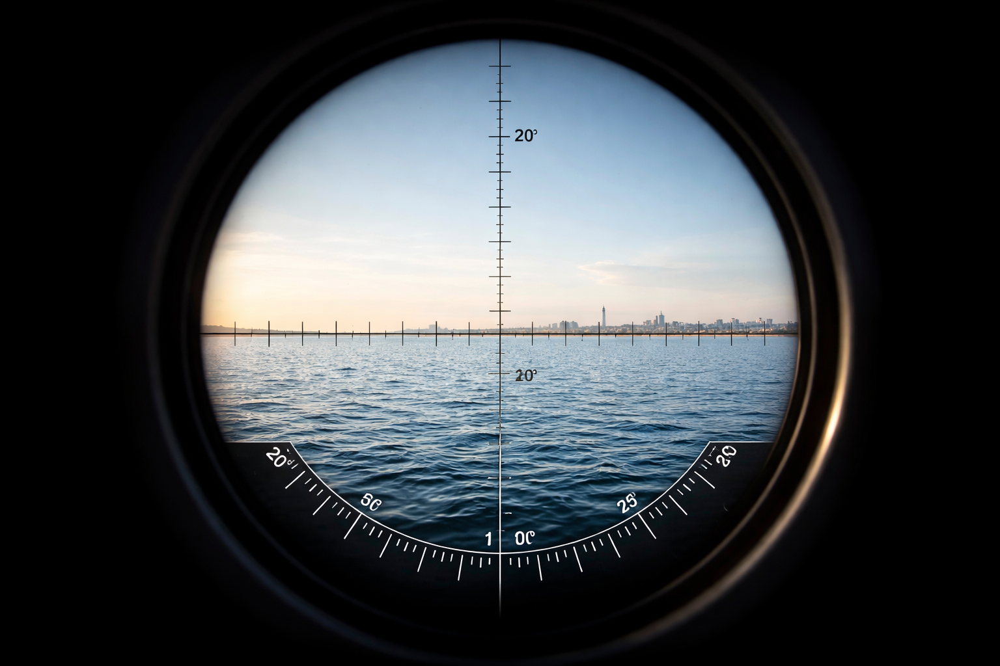

A görbület hiánya – számokkal
Van egy képlet, amelyet gyakran idéznek, de ritkán bontanak ki. Ez nem megfigyelés. Ez geometria.
A hivatalos gömbmodell szerint a Föld sugara körülbelül R = 6 371 km. Ha egy gömb felszínén haladunk, akkor a felszín és az egyenes látóvonal közötti eltérés – amit görbületnek neveznek – közelítőleg így számolható:
h ≈ d² / (2R)
ahol
d = távolság kilométerben
h = az eltérés kilométerben
Nézzük meg, mit jelentenek ezek a számok a gyakorlatban.
1 km:
h ≈ 1² / (2 × 6371) ≈ 0,000078 km ≈ 0,078 m
5 km:
h ≈ 25 / 12742 ≈ 0,0020 km ≈ 2,0 m
10 km:
h ≈ 100 / 12742 ≈ 0,0078 km ≈ 7,8 m
20 km:
h ≈ 400 / 12742 ≈ 0,031 km ≈ 31 m
50 km:
h ≈ 2500 / 12742 ≈ 0,196 km ≈ 196 m
100 km:
h ≈ 10000 / 12742 ≈ 0,785 km ≈ 785 m
Ezek nem elhanyagolható értékek. Több tíz, sőt több száz méterről beszélünk.
Fontos megérteni: ez geometriai eltakarás lenne, nem optikai torzulás. Ha a görbület fizikailag jelen van, akkor az alsó részeknek következetesen el kellene tűnniük, és nagyítással nem hozhatók vissza.
A megfigyelések során azonban mást látunk.
Az objektum nem alulról „levágódik”. Egészében zsugorodik. A részletek vesznek el, nem a tárgy alsó része. Nagyítással sok esetben újra láthatóvá válik.
Ez nem a görbület viselkedése. Ez perspektíva.
A perspektíva optikai törvény: a távolsággal minden látszólag összetart, a részletek feloldódnak, a tárgy nem eltűnik, hanem vizuálisan összeomlik.
A görbület ezzel szemben vágna. Visszavonhatatlanul.
A kérdés tehát nem az, hogy a képlet létezik-e. Hanem az, hogy a valóság követi-e.
Amíg a számítás szerint több száz méternek kellene eltűnnie, de a megfigyelés szerint nem tűnik el, addig a kérdés nyitva marad.
És ahol a kérdés nyitva marad, ott a gondolkodásnak van helye.